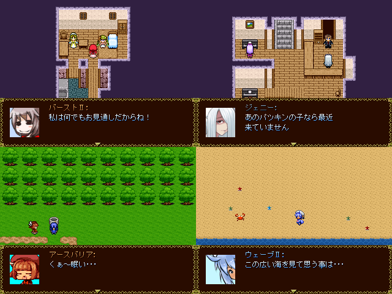

| << Back | トップページ | Next >> |
| No.53 - ★2013年新キャラ総決算 |

| 本体ダウンロード(0.94MB) / BBS / 投票 / 提出済 | |
| 作者：2013年新キャラ総決算の作者 | 使用ツール：2000 |
| ジャンル：見るゲというksg | 配信/投稿：お好きに/お好きに |
| 作者コメント： 2013年で見た新キャラを とりあえず、出せるだけ出してみました。 作者の知識不足ゆえ、出てないキャラもいます。サーセン なおこのゲームにはパク…インスパイア元のゲームが 存在します。 祭りの看板ノックアウト君も出ます！ 30分くらいで終わる見るゲ(ksg)の予定です。 予め言っておくと、遅刻しても許して下さい…×△× | |
| 管理人コメント： 一年の振り返りであり、今後の備忘録にも。年収めにふさわしいですね。 | |
| 更新履歴： 2013/12/22 提出 2013/12/20 登録 | |